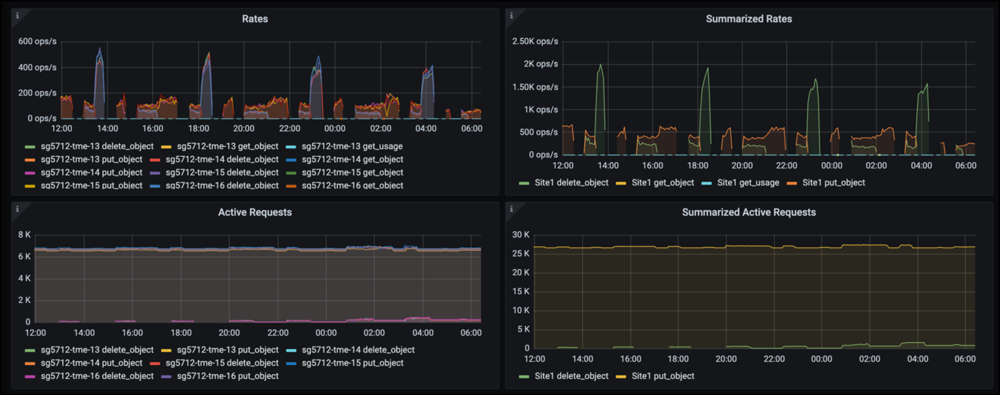

Soluciones de terceros validadas
Soluciones de terceros validadas
Prácticas recomendadas de StorageGRID para la puesta en marcha con Veeam Backup and Replication
 Sugerir cambios
Sugerir cambios
Esta guía se centra en la configuración de NetApp StorageGRID y, en parte, de backups y replicación de Veeam. Este documento está dirigido a administradores de almacenamiento y redes que estén familiarizados con los sistemas Linux y que tengan la tarea de mantener o implementar un sistema NetApp StorageGRID en combinación con Veeam Backup and Replication.
Descripción general
Los administradores de almacenamiento buscan gestionar el crecimiento de sus datos con soluciones que cumplen con la disponibilidad, los objetivos de recuperación rápida, los escalan para satisfacer sus necesidades y automatizan su política para la retención a largo plazo de datos. Estas soluciones también deben proporcionar protección frente a pérdidas o ataques maliciosos. Juntos, Veeam y NetApp se han asociado para crear una solución de protección de datos que combina backup y recuperación de Veeam con NetApp StorageGRID para el almacenamiento de objetos on-premises.
Veeam y NetApp StorageGRID ofrecen una solución fácil de usar que trabajan conjuntamente para ayudar a satisfacer las demandas del rápido crecimiento de los datos y las crecientes regulaciones en todo el mundo. El almacenamiento de objetos basado en cloud es conocido por su resiliencia, capacidad de escalado, eficiencia operativa y de costes que lo convierten en la opción lógica como destino para sus backups. En este documento se proporcionan instrucciones y recomendaciones para la configuración de su solución Veeam Backup y del sistema StorageGRID.
La carga de trabajo de objetos de Veeam crea una gran cantidad de OPERACIONES simultáneas DE PUT, DELETE y LIST DE objetos pequeños. Habilitar la inmutabilidad se añadirá al número de solicitudes al almacén de objetos para establecer la retención y mostrar versiones. El proceso de un trabajo de copia de seguridad incluye la escritura de objetos para el cambio diario. Después de que las nuevas escrituras se hayan completado, el trabajo eliminará cualquier objeto basado en la política de retención de la copia de seguridad. La programación de las tareas de backup casi siempre se superpondrá. Este solapamiento dará como resultado una gran parte de la ventana de backup que consiste en 50/50 carga de trabajo PUT/DELETE en el almacén de objetos. Realizar ajustes en Veeam al número de operaciones simultáneas con la configuración de la ranura de tareas, aumentar el tamaño del objeto aumentando el tamaño del bloque de trabajos de copia de seguridad, reduciendo el número de objetos en las solicitudes de eliminación de objetos múltiples, y elegir la ventana de tiempo máximo para completar los trabajos optimizará el rendimiento y el costo de la solución.
Asegúrese de leer la documentación del producto para "Veeam Backup and Replication" y.. "StorageGRID" antes de empezar. Veeam ofrece calculadoras para entender el tamaño de la infraestructura de Veeam y los requisitos de capacidad que se deben usar antes de dimensionar su solución de StorageGRID. Consulte siempre las configuraciones validadas de Veeam-NetApp en la página web del programa Veeam Ready para "Veeam Ready Object, inmutabilidad de objetos y repositorio".
Configuración de Veeam
Versión recomendada
Siempre se recomienda mantenerse al día y aplicar las revisiones más recientes para su sistema Veeam Backup & Replication 12. Actualmente recomendamos instalar como mínimo el parche de Veeam P20230718.
S3 Configuración del repositorio
Un repositorio de backup de escalado horizontal (SOBR) es el nivel de capacidad del almacenamiento de objetos S3. El nivel de capacidad es una extensión del repositorio primario que proporciona períodos de retención de datos más largos y una solución de almacenamiento de menor coste. Veeam ofrece la capacidad de proporcionar inmutabilidad a través de la API de bloqueo de objetos S3. Veeam 12 puede utilizar múltiples buckets en un repositorio de escalado horizontal. StorageGRID no tiene un límite en cuanto al número de objetos o de capacidad de un único bloque. El uso de varios bloques puede mejorar el rendimiento cuando se realizan backups de conjuntos de datos de gran tamaño donde los datos de backup pueden llegar a escalarse a petabytes en objetos.
En función del dimensionamiento de su solución y sus requisitos específicos, puede que sea necesario limitar las tareas simultáneas. La configuración predeterminada especifica una ranura de tareas de repositorio para cada núcleo de CPU y para cada ranura de tareas un límite de ranura de tareas simultáneas de 64. Por ejemplo, si el servidor tiene 2 núcleos de CPU, se utilizará un total de 128 subprocesos simultáneos para el almacén de objetos. Esto incluye PUT, GET y SUPR por lotes. Se recomienda seleccionar un límite conservador para las ranuras de tareas con las que empezar y ajustar este valor una vez que los backups de Veeam hayan alcanzado un estado constante de nuevos backups y datos de backup caducados. Trabaje con el equipo de su cuenta de NetApp para dimensionar el sistema de StorageGRID correctamente para satisfacer el rendimiento y los periodos de tiempo deseados. Es posible que sea necesario ajustar el número de ranuras de tareas y el límite de tareas por ranura para proporcionar la solución óptima.
Configuración de trabajos de copia de seguridad
Los trabajos de copia de seguridad de Veeam se pueden configurar con diferentes opciones de tamaño de bloque que se deben considerar cuidadosamente. El tamaño de bloque predeterminado es de 1MB KB y, con las eficiencias de almacenamiento que Veeam proporciona compresión y la deduplicación crea tamaños de objeto de aproximadamente 500KB KB para el backup completo inicial y objetos de 100-200kB MB para los trabajos incrementales. Podemos aumentar considerablemente el rendimiento y reducir los requisitos del almacén de objetos eligiendo un tamaño de bloque de backup mayor. Aunque el tamaño de bloque mayor realiza grandes mejoras en el rendimiento del almacén de objetos, se logra a costa de unos requisitos de capacidad de almacenamiento primario potencialmente mayores gracias a la reducción del rendimiento de la eficiencia del almacenamiento. Se recomienda que los trabajos de backup se configuren con un tamaño de bloque de 4MB KB que cree aproximadamente 2MB objetos para los backups completos y tamaños de objeto de 700KB a 1MB KB para los incrementales. Los clientes pueden considerar incluso configurar tareas de backup con un tamaño de bloque de 8 MB, que se puede habilitar con la ayuda del soporte de Veeam.
La implementación de backups inmutables utiliza S3 Object Lock en el almacén de objetos. La opción Inmutabilidad genera un mayor número de solicitudes al almacén de objetos para mostrar y actualizar la retención en los objetos.
A medida que las retenciones de copia de seguridad vencen, los trabajos de copia de seguridad procesarán la eliminación de objetos. Veeam envía las solicitudes de eliminación al almacén de objetos en solicitudes de eliminación de objetos múltiples de 1000 objetos por solicitud. Para soluciones pequeñas, esto puede necesitar ser ajustado para reducir el número de objetos por solicitud. Al reducir este valor, se añadirá la ventaja de distribuir de forma más uniforme las solicitudes de eliminación entre los nodos del sistema StorageGRID. Se recomienda utilizar los valores de la siguiente tabla como punto de partida en la configuración del límite de eliminación de objetos múltiples. Multiplique el valor de la tabla por el número de nodos para el tipo de dispositivo elegido para obtener el valor de la configuración en Veeam. Si este valor es igual o mayor que 1000, no es necesario ajustar el valor predeterminado. Si este valor necesita ser ajustado, por favor trabaje con el soporte de Veeam para hacer el cambio.
| Modelo de dispositivo | S3MultiObjectDeleteLimit por nodo |
|---|---|
SG5712 |
34 |
SG5760 |
75 |
SG6060 |
200 |

|
Trabaje en colaboración con su equipo de cuenta de NetApp para la configuración recomendada de acuerdo con sus necesidades específicas. Las recomendaciones de ajustes de configuración de Veeam incluirán:
|
Configuración de StorageGRID
Versión recomendada
NetApp StorageGRID 11,6 o 11,7 con la revisión más reciente son las versiones recomendadas para implementaciones de Veeam. Muchas funciones de optimización se introdujeron en StorageGRID 11.6.0.11 y 11.7.0.4, que beneficiarán a las cargas de trabajo de Veeam. Siempre se recomienda estar al día y aplicar las correcciones urgentes más recientes para su sistema StorageGRID.
Configuración del balanceador de carga y del extremo S3
Veeam requiere que el punto final se conecte solo a través de HTTPS. Veeam no admite una conexión no cifrada. El certificado SSL puede ser un certificado autofirmado, una entidad de certificación privada de confianza o una entidad de certificación pública de confianza. Para garantizar el acceso continuo al repositorio de S3, se recomienda utilizar al menos dos equilibradores de carga en una configuración de alta disponibilidad. Los balanceadores de carga pueden ser un servicio de balanceador de carga integrado proporcionado por StorageGRID ubicado en cada nodo de administración y nodo de puerta de enlace o solución de terceros como F5, Kemp, HAProxy, Loadbalanacer.org, etc. El uso de un equilibrador de carga StorageGRID proporcionará la capacidad de establecer clasificadores de tráfico (reglas de QoS) que puedan priorizar la carga de trabajo de Veeam o limitar Veeam para no afectar a las cargas de trabajo de mayor prioridad en el sistema StorageGRID.
Bloque de S3
StorageGRID es un sistema de almacenamiento multi-tenancy seguro. Se recomienda crear un inquilino dedicado para la carga de trabajo de Veeam. Se puede asignar opcionalmente una cuota de almacenamiento. Como práctica recomendada habilitar “Usar fuente de identidad propia”. Proteger al usuario de gestión raíz de inquilinos con la contraseña adecuada. Veeam Backup 12 requiere una fuerte consistencia para bloques de S3. StorageGRID ofrece varias opciones de coherencia configuradas a nivel del bloque. Para implementaciones multi-sitio con Veeam accediendo a los datos desde múltiples ubicaciones, seleccione “strong-global”. Si los backups y restauraciones de Veeam se producen en un solo sitio, el nivel de consistencia debe establecerse en «sitio fuerte». Para obtener más información sobre los niveles de coherencia de bloques, revise la "documentación". Para usar StorageGRID para los backups de inmutabilidad de Veeam, el bloqueo de objetos de S3 debe habilitarse globalmente y configurarse en el bloque durante la creación del bloque.
Gestión del ciclo de vida
StorageGRID admite la replicación y el código de borrado para la protección a nivel de objeto en nodos y sitios de StorageGRID. El código de borrado requiere un tamaño de objeto de 200kB KB como mínimo. El tamaño de bloque predeterminado para Veeam de 1MB produce tamaños de objeto que a menudo pueden estar por debajo de este tamaño mínimo recomendado de 200kB después de las eficiencias de almacenamiento de Veeam. Para mejorar el rendimiento de la solución, no se recomienda utilizar un perfil de código de borrado que abarque varios sitios a menos que la conectividad entre los sitios sea suficiente para no agregar latencia ni restringir el ancho de banda del sistema StorageGRID. En un sistema StorageGRID multisitio, la regla de gestión del ciclo de vida de la información se puede configurar para almacenar una sola copia en cada sitio. Para la máxima durabilidad, se puede configurar una regla para almacenar una copia codificada de borrado en cada sitio. El uso de dos copias locales en los servidores de Veeam Backup es la implementación más recomendada para esta carga de trabajo.
Puntos clave de implementación
StorageGRID
Asegúrese de que el bloqueo de objetos está activado en el sistema StorageGRID si es necesario inmutabilidad. Busque la opción en la interfaz de usuario de administración en Configuration/S3 Object Lock.

Al crear el bucket, seleccione «Enable Object Lock» (Habilitar bloqueo de objetos S3) si este bucket se va a utilizar para backups de inmutabilidad. Esto habilitará automáticamente el control de versiones de bloques. Deje desactivada la retención predeterminada, ya que Veeam establecerá la retención de objetos de forma explícita. El control de versiones y el bloqueo de objetos S3 no se deben seleccionar si Veeam no está creando copias de seguridad inmutables.

Una vez creado el bloque, vaya a la página de detalles del bloque creado. Seleccione el nivel de coherencia.

Veeam requiere una gran coherencia para bloques de S3. Por lo tanto, para implementaciones de múltiples sitios con Veeam accediendo a los datos desde múltiples ubicaciones, seleccione “strong-global”. Si los backups y restauraciones de Veeam se producen en un solo sitio, el nivel de consistencia debe establecerse en «sitio fuerte». Guarde los cambios.

StorageGRID ofrece un servicio de balanceo de carga integrado en cada nodo de administración y nodos de pasarela dedicados. Una de las muchas ventajas de usar este equilibrador de carga es la capacidad de configurar políticas de clasificación de tráfico (QoS). Aunque se utilizan principalmente para limitar el impacto de las aplicaciones en otras cargas de trabajo de clientes o priorizar una carga de trabajo sobre otras, también proporcionan una bonificación de la recopilación de métricas adicionales para ayudar a la supervisión.
En la pestaña de configuración, seleccione “Clasificación de tráfico” y cree una nueva política. Asigne un nombre a la regla y seleccione el tipo de cubo o arrendatario. Introduzca los nombres de los cubos o arrendatarios. Si la QoS es necesaria, establece un límite, pero para la mayoría de las implementaciones, solo queremos agregar los beneficios de monitoreo que proporciona, así que no establezcas un límite.

Veeam
En función del modelo y la cantidad de dispositivos StorageGRID, puede que sea necesario seleccionar y configurar un límite para el número de operaciones simultáneas en el bloque.

Siga la documentación de Veeam sobre la configuración del trabajo de copia de seguridad en la consola de Veeam para iniciar el asistente. Después de agregar VM, seleccione el repositorio SOBR.

Haga clic en Configuración avanzada y cambie la configuración de optimización de almacenamiento a 4 MB o más. Se activará la compresión y la deduplicación. Cambie la configuración de invitado según sus requisitos y configure la programación de trabajos de copia de seguridad.

Supervisión de StorageGRID
Para obtener una visión completa del rendimiento que están teniendo Veeam y StorageGRID juntos, deberá esperar hasta que haya caducado el tiempo de retención de los primeros backups. Hasta este punto, la carga de trabajo de Veeam consta principalmente de OPERACIONES PUT y no se han producido eliminaciones. Una vez que los datos de backup caducan y se producen limpiezas, ahora puede ver el uso consistente completo en el almacén de objetos y ajustar la configuración en Veeam si es necesario.
StorageGRID proporciona gráficos prácticos para supervisar el funcionamiento del sistema ubicado en la página Métricas de la pestaña Soporte. Los paneles principales a ver serán la información general de S3, ILM y la normativa de clasificación de tráfico si se crea una normativa. En el panel de Descripción general de S3 encontrará información sobre las tasas de funcionamiento de S3, las latencias y las respuestas de las solicitudes.
Si observa las tasas de S3 y las solicitudes activas, puede ver cuánta carga está manejando cada nodo y el número general de solicitudes por tipo. 
El gráfico Duración Media muestra el tiempo medio que cada nodo está tomando para cada tipo de solicitud. Esta es la latencia media de la solicitud y puede ser un buen indicador de que se puede requerir un ajuste adicional, o hay espacio para que el sistema StorageGRID asuma más carga.

En el gráfico Total de Solicitudes Completadas, puede ver las solicitudes por tipo y códigos de respuesta. Si ve respuestas distintas de 200 (OK) para las respuestas, esto puede indicar un problema como que el sistema StorageGRID está recibiendo una carga elevada enviando respuestas 503 (Lento) y puede que sea necesario realizar algún ajuste adicional, o que haya llegado el momento de expandir el sistema para aumentar la carga.

En la consola de gestión de la vida útil de la información, puede supervisar el rendimiento de eliminación del sistema StorageGRID. StorageGRID usa una combinación de eliminaciones síncronas y asíncronas en cada nodo a fin de intentar optimizar el rendimiento general de todas las solicitudes.

Con una Política de clasificación de tráfico, podemos ver las métricas del rendimiento de la solicitud del equilibrador de carga, las tasas, la duración, así como los tamaños de los objetos que Veeam envía y recibe.


Dónde encontrar información adicional
Si quiere más información sobre el contenido de este documento, consulte los siguientes documentos o sitios web:
Por Oliver Haensel y Aron Klein